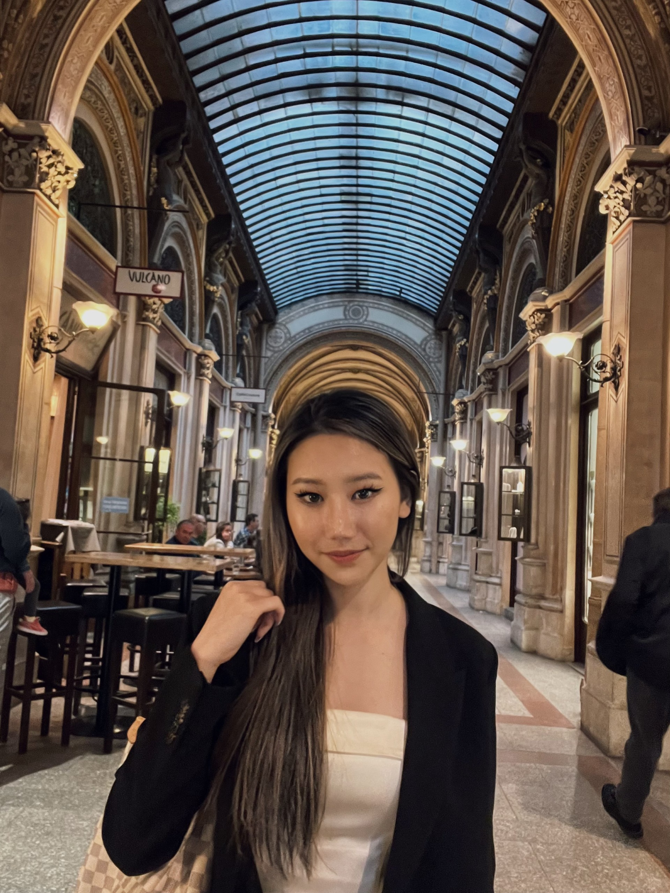
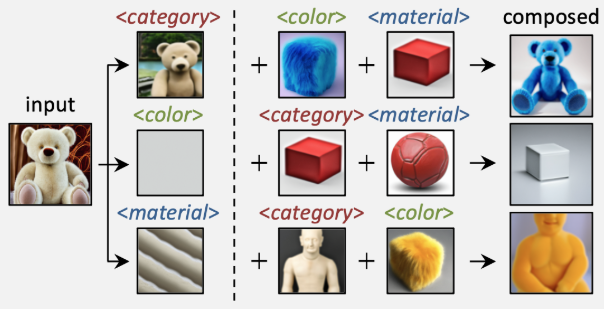
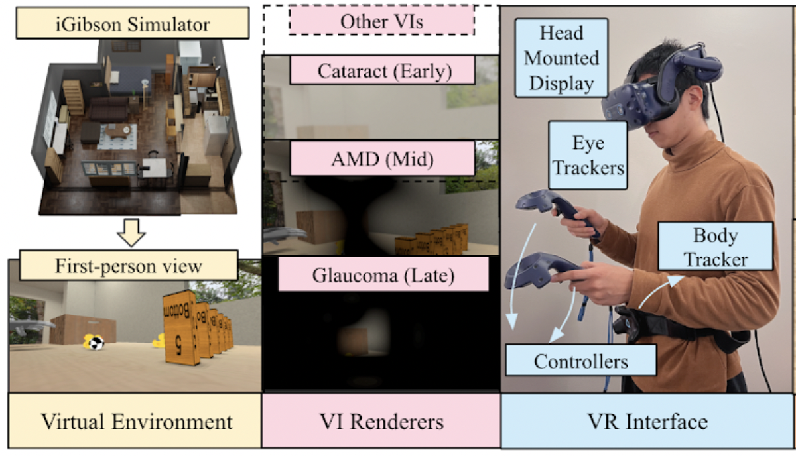

|
Sharon Lee I am Sharon, a PhD student and Knight-Hennessy scholar at Stanford University. I earned my Master’s from Stanford, where I worked with Jiajun Wu and Fei-Fei Li at the Stanford Vision and Learning Lab, and my Bachelor’s in EECS with Honors from UC Berkeley.
My research interest lie in computer vision and generative models. In particular, I work on controllable 2D and 3D generation.
|
 |
{kind=link}
News
🔊 Nov 2024: Featured in TheStar newspaper
Outside academia, I founded a nonprofit to help orphans access basic needs and education. I’ve also represented California students at the Capitol, discussing with congressmen for educational and social policies. |
Research |

|
BEHAVIOR Vision Suite: Customizable Dataset Generation via Simulation
Yunhao Ge*, Yihe Tang*, Jiashu Xu*, Cem Gokmen*, Chengshu Li, Wensi Ai, Benjamin Jose Martinez, Arman Aydin, Mona Anvari, Ayush K Chakravarthy, Hong-Xing Yu, Josiah Wong, Sanjana Srivastava, Sharon Lee, Shengxin Zha, Laurent Itti, Yunzhu Li, Roberto Martín-Martín, Miao Liu, Pengchuan Zhang, Ruohan Zhang, Li Fei-Fei, Jiajun Wu Conference on Computer Vision and Pattern Recognition (CVPR), 2024 Highlight project page / arXiv |
|

|
Language-Informed Visual Concept Learning
Sharon Lee*, Yunzhi Zhang*, Shangzhe Wu, Jiajun Wu International Conference on Learning Representations (ICLR), 2024 project page / arXiv |

|
NOIR: Neural Signal Operated Intelligent Robots for Everyday Activities
Ruohan Zhang*, Sharon Lee*, Minjune Hwang*, Ayano Hiranaka*, Chen Wang, Wensi Ai, Jin Jie Ryan Tan, Shreya Gupta, Yilun Hao, Gabrael Levine, Ruohan Gao, Anthony Norcia, Li Fei-Fei, Jiajun Wu Conference on Robot Learning (CoRL) , 2023 Oral Presentation at Bridging the Gap between Cognitive Science and Robot Learning Workshop at CoRL 2023 project page / arXiv |
|
|
Primitive Skill-based Robot Learning from Human Evaluative Feedback
Ayano Hiranaka*, Minjune Hwang*, Sharon Lee, Chen Wang, Li Fei-Fei, Jiajun Wu, Ruohan Zhang International Conference on Intelligent Robots and Systems (IROS) , 2023 project page / arXiv |
|

|
Quantifying the Effect of Visual Impairments on Daily Activities in Virtual, Interactive Environments
Wensi Ai, Sharon Lee, Li Fei-Fei, Jiajun Wu, Ruohan Zhang Proceedings of the Annual Meeting of the Cognitive Science Society (CogSci) , 2023 project page / arXiv |
Services |
|
Reviewer for ICLR and ICML.
Student instructor for CS186, Fall 2021 Student instructor for CS170, Spring 2022 Course assistnat for CS145, Autumn 2022 |
|
Adapted from Jon Barron's template. |